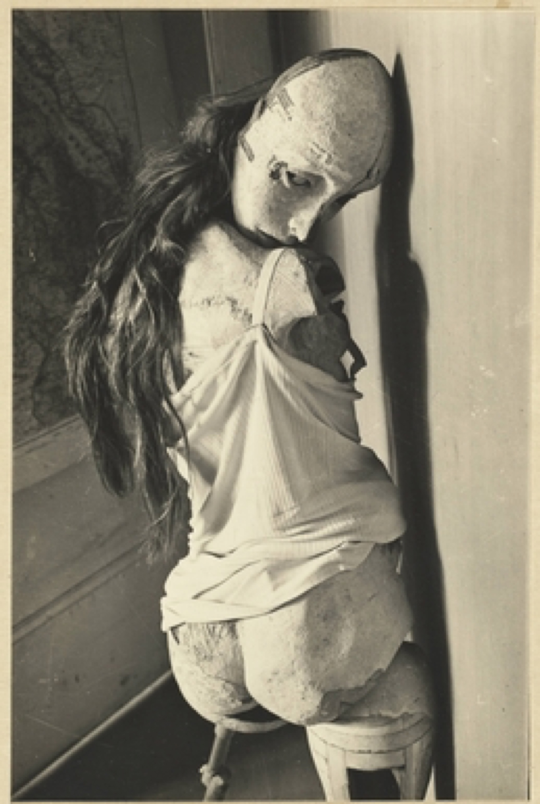
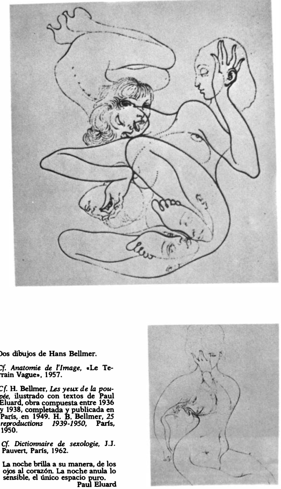

Lágrimas de Eros · Obra 101 de 124
La muñeca (La Poupée) y dos dibujos
Hans Bellmer

Una fotografía nocturna de la muñeca articulada de Bellmer, de pie junto a un arbusto, y dos dibujos de cuerpos entrelazados. Para la muñeca, Bataille remite a «Les Jeux de la poupée», con textos de Paul Éluard (preparado entre 1936 y 1938 y publicado en París en 1949); para los dibujos, a «Anatomie de l'image» (Le Terrain vague, 1957). De la serie de la muñeca hay copias fotográficas en varios museos, por ejemplo en el Metropolitan de Nueva York.
Lo que hace que destaque
Una fotografía nocturna de la muñeca articulada de Bellmer, de pie junto a un arbusto, y dos dibujos de cuerpos entrelazados. Para la muñeca, Bataille remite a «Les Jeux de la poupée», con textos de Paul Éluard (preparado entre 1936 y 1938 y publicado en París en 1949); para los dibujos, a «Anatomie de l'image» (Le Terrain vague, 1957). De la serie de la muñeca hay copias fotográficas en varios museos, por ejemplo en el Metropolitan de Nueva York.
Contexto histórico
La traducción inglesa dice «Les yeux de la poupée», errata por «Les Jeux de la poupée». No se ha identificado qué copia de la fotografía ni qué dibujos son (el Met no publica imágenes). El enlace lleva al ejemplar del MoMA del libro al que remite Bataille, con 17 fotografías coloreadas a mano, no a la copia concreta que reproduce la lámina. El poema del pie es de Éluard, no de Bataille.
Autoría y procedencia
Hans Bellmer (1902-1975), escultor, fotógrafo y dibujante germano-francés, célebre por sus muñecas articuladas de tamaño natural que exploran el erotismo y la anatomía inconsciente.
En los libros
Las lágrimas de Eros, de Georges Bataille · Lámina de la p. 179
Ficha pendiente de contrastar con fuentes académicas.
Otras vistas
